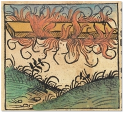

Gravure (colorisée) du phénomène céleste "embrasé" observé Schedel, Hartmann: Liber Chronicarum, Nuremberg,
incunable de 1493, CLXXXIX

Dans le ciel d'Europe, une boule de feu vogue du sud à l'est puis disparait à l'ouest Schedel, Hartmann: Liber Chronicarum (Chronique de Nuremberg), Nuremberg, incunable de 1493, Bibliothèque de Saint
Atry < Bibliothèque municipale de Verdun < découvert
par le chanoine Boulleaux, LDLN 329 < Bougard, M.:
La chronique des OVNI, 1977 p. 66 < Costagliola, Jacques: 1998Une
explication proposée est une météorite tombée à Ensisheim en Alsace et pouvant toujours être vue à l'Hôtel de VilleCet événement, situé approximativement vers 1044 par le Liber Chronicarum, correspondrait en fait à celui du 6 avril 1039.
Nov ou Dec
A Reims, plusieurs personnes proches de l'archevêque voient
une étoile "phosphore", lumineuse, s'agiter violemment de haut en bas comme pour menacer les habitants de la
TerreGuy de Roucy/Guy 1er de Chatillon (archevêque de Reims), a.k.a. "Widon" ou "Vidon" < Raoul Glaber (moine): "De Tertia Eclupso Solis", Les cinq livres de ses histoires (900-1044), publiés par Maurice Prou, Paris: Alphonse Picard, 1886, p. 130., livre 5, chap. 3 < Deliyannis, Y..